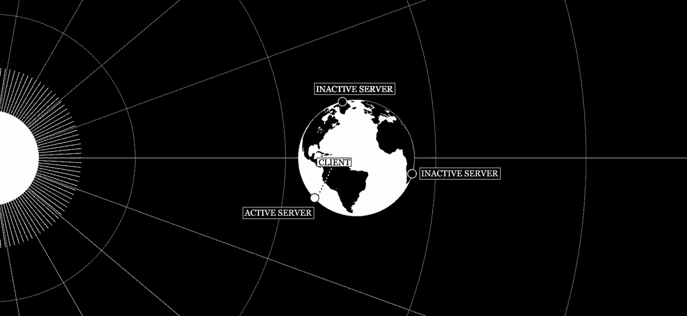
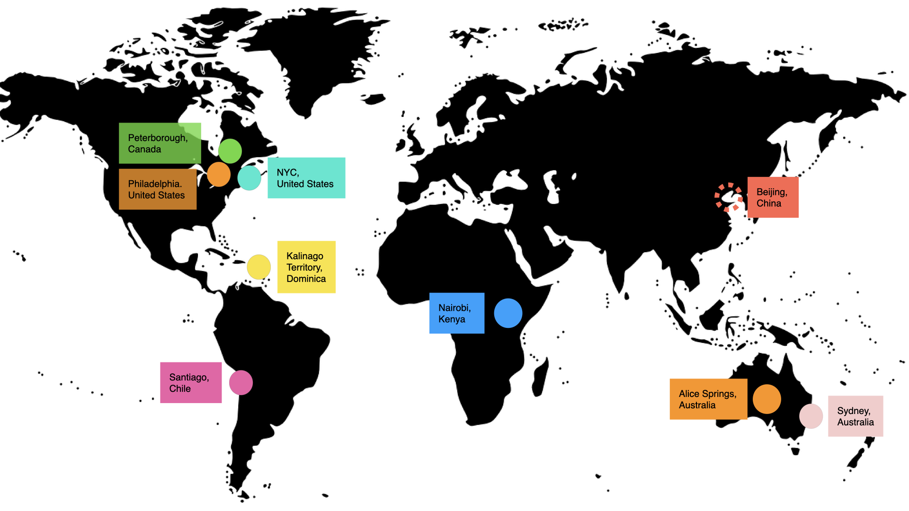

News
About
Solar Protocol is a web platform hosted across a network of solar-powered servers set up in different locations around the world. A solar-powered server is a computer that is powered by a solar panel and a small battery. Each server can only offer intermittent connectivity that is dependent on available sunshine, the length of day and local weather conditions. When connected as a network, the servers coordinate to serve a website from whichever of them is enjoying the most sunshine at the time.
With servers located in different time zones, seasons and weather systems, the network directs internet traffic to wherever the sun is shining. When your browser makes a request to see this website, it is sent to whichever server in the network is generating the most energy. For example, right now you are seeing the version of this website that is hosted on Test Server server located in Studio where it is 11:22 PM and the weather is overcast clouds.
The Solar Protocol network explores the sun’s interaction with Earth as a form of logic that shapes the daily behaviors, seasonal activities and the decision making of almost all life forms. Solar Protocol honors this natural logic, exploring it as a form of intelligence that is used to automate decisions in a digital network.
How does it work?
A solar panel recharges a battery that provides energy for a small computer set up at each project location around the world. As the sun rises and sets, each server becomes active or inactive as its solar panel goes into sunlight or darkness. Traffic is redirected between servers depending on where there is the most light.
Solar Protocol uses everyday internet technologies like the Domain Network Service (DNS) protocol, a decentralized system that associates a URL address to the IP address of a server. In short, DNS is the system that dictates the path between client and server. For large-scale, high volume web services that use multiple servers hosted in different locations, the DNS protocol typically directs network traffic to whichever server gives the quickest response time. For example, when making a Google search, your request would be sent to whichever Google server responds the quickest which is usually the server that is the closest geographically. This prioritizes speed over all other factors that determine how a network operates, a characteristic that is prevalent in much digital culture.

But it doesn’t have to work this way. Instead, the Solar Protocol network is built with a different logic based on the sun, automatically directing traffic to whichever server is generating the most solar energy at the time of the request. Decisions about where to move computational activity in the network are made according to where there is the most naturally available energy, rather than according to what would produce the quickest results for the user. In other words, in Solar Protocol, the distribution of sunshine (and therefore energy) across the planet determines the path from client to server.
Why does the appearance of this website change from time to time?
Right now this website is being delivered to you from the Test Server server located in Studio. This website may look different depending on which server is displaying this website. That’s because the people stewarding each server can choose to customize their local version of this website. These variations in design and content are visible when their server is the active server.
The appearance of this website is also energy responsive. Our software changes the styling and resolution of the media on this website according to how much energy is stored in the battery of the active server. This means it may look different at different times of the day or depending on the seasons of the year. If the battery level at the active server is low, this website is displayed in low resolution mode, without images. This reduces the size of the page and therefore the energy required to send it to people who are looking at it on the internet. If more stored energy is available, the site will appear at a higher resolution with heavier media such as images and graphics.
Occasionally the website may go down if there is insufficient energy stored at all of the servers. As our network grows and we set up more servers in more time zones and climates, this should happen less and less (and if you’re interested in setting one up, read more here ). It’s always sunny somewhere!
Network

The Solar Protocol project is maintained by a community of volunteers around the world who have set up servers in different locations and timezones. We periodically open up spots for new stewards or create open calls to participate to specific initiatives, like workshops and exhibitions. If you are interested in hosting a server or applying to an open call, please see our call page .
Credits
Solar Protocol is led by Tega Brain , Alex Nathanson and Benedetta Piantella.
Special thanks
Solar Protocol wouldn't be possible without a large community of contributers and supporters. We particularly wish to thank all of the server stewards. Past and present server stewards include Anne Pasek , Caddie Brain , Brendan Phelan, John Samoza, Camilo Rodriguez Beltran, Daniel Ñuñez, Alejandro Rebolledo, Graham Wilfred Jnr, Tim Chatwin, Bridgit Chappell, Baoyang Chen, Denzel J. Wamburu, Cyrus K, Chris Stone, Jesse Li, Fiber Festival (Zoë Horsten, Jarl Schulp), and Rhizome.
Additionally, we wish to thank Taeyoon Choi, Crystal Chen, Sam Lavigne , Dan Phiffer, Mitchell Whitelaw, Sharon De La Cruz , Jonathan Dahan, the staff and fellows at Eyebeam, and many more, for their advice and support . Credits for specific exhibitions and initiatives can be found on their project pages and software contributors can be seen on Github.
This project is supported by:
- Mozilla's Creative Media Award
- The Eyebeam Rapid Response for a Better Digital Future program
- Code for Science & Society's Digital Infrastructure Incubator